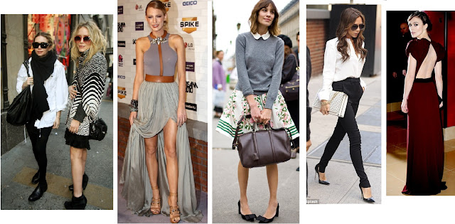

How to Build a Basic Wardrobe: Men's Fashion Tips
By: Matthew
Introduction
When it comes to dressing well, building a basic wardrobe is the foundation of great style. It can be overwhelming with all the different options out there, but fear not, as this website is here to guide you through the process of creating a wardrobe that is not only versatile but also timeless.
Our previous subheadings have covered a variety of topics such as Understanding the Importance of a Basic Wardrobe, Men's Essential Clothing Items, Building a Wardrobe on a Budget, and Tailoring Tips for a Better Fit. In this section, we will introduce you to the concept of creating a basic wardrobe and why it's so important.
A basic wardrobe means investing in high-quality, classic pieces that can be worn repeatedly in various combinations. This approach not only saves money in the long run, but it also simplifies the morning routine by providing a range of outfits to choose from.
Think of a basic wardrobe as a capsule collection that can be easily mixed and matched to create multiple outfits. It's important to note that while trendy items may come and go, classic pieces in neutral colours are timeless and can adapt to any situation or occasion.
Investing in the right pieces can also have a significant environmental impact since it reduces textile waste and decreases the need to consume cheap, fast fashion items that fall apart after only a few wears.
So, get ready to discover the benefits of building a basic wardrobe, and start curating a closet that will make you look stylish, confident and put together.
ad space
Assess Your Style
Creating a wardrobe that combines both style and practicality can be a daunting task, particularly for guys who aren't particularly fashion-savvy. But fear not, gentlemen, because building a basic wardrobe is a lot easier than you think, and it starts with one essential step: assessing your style.
While it might seem simple, many guys often overlook this critical step. They jump straight to buying clothes they think look good without considering whether they fit their style, personality, and lifestyle. Before you start shopping for clothes, it's essential to determine what makes you comfortable and confident.
To assess your style, consider getting inspiration from different sources such as Instagram, Pinterest, or men’s style magazines. Pay attention to the outfits that catch your eye, and try to find out what they all have in common. Do the clothes look comfortable and relaxed, or are they sharp and put-together?
It's also crucial to ask yourself some essential questions. What kind of message do you want to convey about yourself through your clothes? What kind of clothes complement your lifestyle and the environment you're in? What kind of brands or stores resonate with you most?
Once you've answered these questions, you can pinpoint the key elements that define your style. From there, you can start building a basic wardrobe that includes essential pieces such as a white t-shirt, dark denim jeans, a classic blazer, a versatile pair of shoes, and several dress shirts.
Assessing your style is the first and most crucial step in building a wardrobe that works for you. By taking the time to evaluate your style and persona, you can create a wardrobe that reflects who you are, boosts your confidence, and helps you look and feel your best.
ad space
Invest in Staples
Building a wardrobe is not an easy task, especially for men. As fashion is constantly changing, it can be difficult to know what pieces you should invest in and what items are just passing trends. This is why it is important to understand the value of investing in wardrobe staples. By investing in classic, versatile pieces, you can create a foundation for your wardrobe that can be built upon for years to come.
A basic wardrobe should consist of staple items that can be mixed and matched to create different outfits. These items include a tailored suit, a pair of high-quality dress shoes, a classic pair of jeans, a white dress shirt, a navy blazer, a versatile watch and a leather belt. These staples can be worn for any occasion, from a job interview to a night out with friends.
Investing in these staples may require spending a bit more money, but it is important to remember that quality always trumps quantity. By investing in high-quality items, they will last longer and will be classic enough to wear for years to come. This will save you money in the long run, as you won't have to worry about replacing cheap, trendy items every season.
Building a basic wardrobe is a process that requires time, effort and patience. By investing in classic, versatile pieces, you can create a wardrobe that will last you for years to come. When you have a solid foundation in place, it becomes easier to add in new and trendy items that will complement your basic wardrobe staples. Remember that a well-dressed man is not only fashionable, but timeless.
ad space
Add Personality with Accessories
Accessories are the perfect way to add personality and flair to any outfit. Whether you're looking to add a pop of color or a touch of elegance, the right accessories can take your wardrobe to the next level. In this section, we'll explore the best accessories for men to help you build a basic wardrobe that's both functional and stylish.
First up, let's talk about watches. A classic leather strap watch can add a touch of sophistication to any outfit. Whether you opt for a simple design or something more intricate, a good watch is a must-have accessory for any man. Not only is it functional, but it also adds a touch of style to your wrist.
Another essential accessory for men is a stylish belt. Belts can be functional, but they can also be stylish. A classic leather belt can dress up a pair of jeans or add sophistication to a suit. Opt for a belt that's stylish and versatile – something that will go with a variety of outfits.
Lastly, let's talk about shoes. Shoes can make or break an outfit. In order to build a basic wardrobe, you'll want to invest in a few key pairs of shoes. A classic pair of brown oxfords or black dress shoes are a must-have for any professional wardrobe. For a more casual look, opt for a pair of clean, simple sneakers.
In conclusion, accessories are a crucial component of any man's wardrobe. By adding a watch, belt, and shoes to your outfit, you'll instantly elevate your style and add a touch of personality. Remember to opt for pieces that are versatile and classic – these are the accessories that will stand the test of time and become your go-to pieces for years to come.
ad space
Mix and Match
Creating a basic wardrobe is the first step towards a successful fashion journey. A well-curated, mix and match wardrobe can save you time and money, while also allowing you to make a strong fashion statement. A basic wardrobe should be versatile and reflect your personal style.
When building your wardrobe, start with neutral and timeless pieces, such as a navy blazer or a pair of chinos. These pieces are easy to mix and match with other items in your wardrobe. The key is to invest in high-quality pieces that will last for years to come. Choose items that you can wear in various settings, from a casual dinner to a business meeting.
One way to mix and match pieces is to focus on complementary colors. Pairing a navy blazer with a light-blue dress shirt creates a classic and cohesive look. Try layering a white t-shirt under a beige cardigan for a more laid-back, casual outfit. Another way to mix and match colors is to experiment with contrasting shades. For example, a burgundy sweater paired with green chinos or a brown belt and shoes is a bold and unexpected combination that can make you stand out.
When it comes to building your wardrobe, consider investing in versatile pieces that can be dressed up or down. A solid-colored dress shirt, for example, can be worn with a suit or tucked into jeans for a more casual look. A well-fitted pair of dark wash jeans can be dressed up with a blazer and dress shoes or dressed down with sneakers and a t-shirt.
In conclusion, a well-curated, mix and match wardrobe is essential for any man who wants to look stylish and put-together. By investing in high-quality, versatile pieces, and experimenting with complementary and contrasting colors, you can create an endless variety of outfits that reflect your personal style. So start building your wardrobe today, and enjoy the endless fashion possibilities that await!
ad space
Conclusion
As we wrap up our guide on how to build a basic wardrobe, it's important to emphasize that fashion is not just about looking good, but also feeling confident and comfortable in your own skin. While keeping up with the latest trends can be exciting, having a functional and timeless wardrobe that you can rely on is equally important.
Remember, building a wardrobe is a journey, not a destination. It takes time and effort to curate a collection of items that truly reflect your personal style and taste. Don't be afraid to experiment and try new things, but always stay true to yourself.
Throughout this guide, we've covered the essential pieces that every man should have in his wardrobe, from versatile t-shirts to classic dress shirts and well-fitted jeans. We've also discussed the importance of investing in quality pieces that will last you for years to come.
But building a wardrobe is more than just buying clothes. It's about taking care of your clothes, knowing how to style them, and understanding which pieces work well together. It's about finding your own unique style and expressing yourself through your fashion choices.
We hope that this guide has provided you with the tips and knowledge you need to build a basic wardrobe that works for you. Whether you're just starting out or looking to refresh your wardrobe, remember to stay true to yourself and have fun with fashion.
ad space